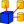

Affichage
Contient toutes les fonctions liées à l'affichage du modèle, comme la présentation des panneaux , zoom, etc ...
- Vues Standards
-
 Tout afficher
Tout afficher - Afficher la Sélection
- Axonométrique 0
-
 Face 1
Face 1 -
 Dessus 2
Dessus 2 - Droit 3
-
 Arrière 4
Arrière 4 -
 Dessous 5
Dessous 5 - Gauche 6
- Rotation à gauche
-
 Rotation à droite
Rotation à droite
-
{kind=link}
{kind=link}
{kind=link}
{kind=link}
{kind=link}
- Figer Affichage
- Enregistrer Vues...
- Charger Vues...
- Figer laVue
- Effacer Vues
{kind=link}
- Stéréo
-
 rouge/vert
rouge/vert - Tampon Stéréo Quadruple
- Lignes Stéréo Entrelacées
- Colonnes Stéréo Entrelacées
-
 Stéréo Désactivée
Stéréo Désactivée -
 Récupérer la position de la caméra
Récupérer la position de la caméra
-
- Zoom voir aussi Modèle Souris
- Zoom Avant
-
 Zoom Arrière
Zoom Arrière -
 Zoom de Sélection (....)
Zoom de Sélection (....)
- Fenêtre de Document
{kind=link}
Afficher les axes de Coordonnées
Mappage de Texture voir Macro Texture Objets et Vue Texture
- Visibilité
- Basculer la visibilité (....) (... "space")
- Afficher la sélection
- Masquer la sélection
- Basculer tous les objets
- Masquer tous les objets
-
 Basculer la sélectivité
Basculer la sélectivité -
 Activer/Désactiver les mesures
Activer/Désactiver les mesures -
 Effacer les mesures
Effacer les mesures
Basculer la visibilité
Basculer le mode Navigation/Édition
- Propriétés d'affichage...
- Mode d'Affichage
- Matériaux
- Affichage
- Taille de Point
- Épaisseur de Ligne
- Transparence
- Transparence du trait
Couleur Aléatoire
{kind=link}
- Atelier
- Aucun
-
 Architecture
Architecture -  Assemblage
-
 Complet
Complet -
 Planche à Dessin
Planche à Dessin - Dessin
-
 Fem
Fem - Atelier Image
- Info
- Inspection
- Atelier Maillage
-
 OpenSCAD
OpenSCAD -
 Pièce
Pièce -
 Concepteur de Pièce
Concepteur de Pièce -
 Tracer
Tracer - Points
-
 Raytracing
Raytracing - Reverse Engineering
-
 Robot
Robot -
 Bateau
Bateau -
 Esquisseur
Esquisseur - Tableur
-
 Centre de Démarrage
Centre de Démarrage - Test charpente
-
 Web
Web
{kind=link}
{kind=link}
{kind=link}
{kind=link}
{kind=link}
{kind=link}
- Barre d'Outils
- Fichier
- Macro
- Affichage
- Concepteur de Pièce
- Esquisse géométriques
- Esquisse Contraintes
- Boulons
- Info
- FreeCAD Part
- Vis
- Grille Planche à Dessin
- Panneaux
- Rapport
- Arbre
- Propriété
- Sélection
- Vue Combinée
- Console Python
- Barre d'états